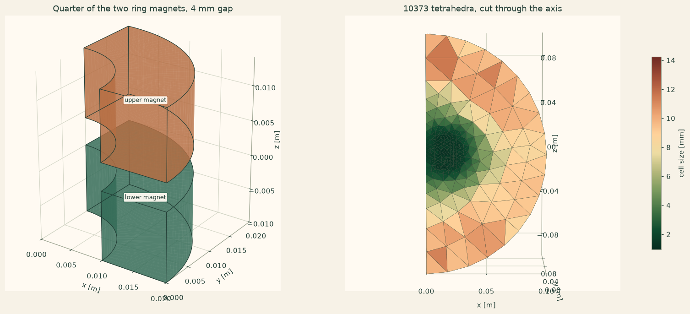

Docs › Examples › Axial magnetic bearing with permanent magnets
Magnetostatics · 3D
Axial magnetic bearing with permanent magnets
Two axially magnetised NdFeB ring magnets that repel each other across an air gap and form a passive, contactless axial bearing.
Run locally with OneSimulation. The example downloads are free. Running them requires an activated runtime. The current pilot runs on macOS on Apple Silicon with CPython 3.13. Installation and activation · View pilot plans. Scope of the reference checks.

What it computes
OneSimulation solves the 3D field of the rigid permanent magnetisation with second-order Nedelec edge elements on one quarter read from STEP for three air gaps and integrates the Maxwell stress over the mid-plane of the gap. The force is compared with the exact force of the equivalent surface currents from Maxwell's mutual inductance of coaxial loops. The script that builds the STEP files comes with the notebook.
What it checks
The Maxwell-stress forces of 172.2, 106.4 and 54.8 N at 2, 4 and 8 mm gap lie within +2.8, -2.3 and +0.5 % of the exact 167.5, 108.8 and 54.5 N on meshes of about 10 000 tetrahedra; at 4 mm the bearing carries 11.1 kg.
Geometry
The notebook starts at the import of the CAD files axial_magnetic_bearing_force.step, axial_magnetic_bearing_force_lower.step, axial_magnetic_bearing_force_upper_2mm.step, axial_magnetic_bearing_force_upper_4mm.step, axial_magnetic_bearing_force_upper_8mm.step: STEP (AP242), readable by any CAD program, with the names of the faces that the boundary conditions use. Put them next to the notebook.

The geometry script
The script axial_magnetic_bearing_force_geometry.py builds the geometry with the CAD objects of OneSimulation and writes the files. Change a dimension there, run it, and run the notebook again.
"""Geometry of the OneSimulation example "Axial magnetic bearing with permanent magnets".
Builds one quarter of the air around a pair of ring magnets with the CAD objects of OneSimulation:
a quarter of a ball of 100 mm radius, cut by the planes x = 0 and y = 0 (face group planes; the
ball surface is outer), written to axial_magnetic_bearing_force.step. The quarter of the lower,
fixed ring magnet (inner radius 10 mm, outer radius 20 mm, 10 mm high, top face at z = 0) goes to
axial_magnetic_bearing_force_lower.step, the upper ring for the air gaps 2, 4 and 8 mm to
axial_magnetic_bearing_force_upper_2mm.step, ..._4mm.step and ..._8mm.step.
"""
from onesim.cad.d3 import AnnularCylinder, Box, Sphere
mm = 1e-3
air, inner, outer, height = 100 * mm, 10 * mm, 20 * mm, 10 * mm
quarter = Box(length=air, width=air, height=2 * air, origin=(0.0, 0.0, -air)).named(
"cut"
)
region = Sphere(radius=air).named("ball") & quarter
faces = region.boundaries
region.grouped(
planes=faces["cut.x_min"] | faces["cut.y_min"],
outer=region.select(faces=lambda face: face.id.startswith("ball")),
).save("axial_magnetic_bearing_force.step")
(
AnnularCylinder(
inner_radius=inner,
outer_radius=outer,
length=height,
origin=(0.0, 0.0, -height),
)
& quarter
).save("axial_magnetic_bearing_force_lower.step")
for gap in (2, 4, 8):
(
AnnularCylinder(
inner_radius=inner,
outer_radius=outer,
length=height,
origin=(0.0, 0.0, gap * mm),
)
& quarter
).save(f"axial_magnetic_bearing_force_upper_{gap}mm.step")The notebook
The complete notebook, cell by cell. Run it to produce the figures and the comparison printout.
Permanent-magnet bearings carry loads without contact, wear or lubrication, in flywheels, pumps and turbomolecular pumps. Here two NdFeB ring magnets (inner radius 10 mm, outer radius 20 mm, 10 mm high, remanence \(B_r=1.2\) T) are magnetised along the axis in opposite directions and face each other across an air gap \(g\): the like poles repel, and the upper ring floats.
The magnets are rigid, \(\mathbf B=\mu_0(\mathbf H+\mathbf M)\) with \(\mu_0M=B_r\). With no free currents the vector potential solves
the magnetisation acting through its curl. The arrangement is rotationally symmetric; one quarter is computed in 3D. The air, a quarter of a ball of 100 mm radius, comes from the CAD file axial_magnetic_bearing_force.step (face groups planes and outer), the lower magnet from axial_magnetic_bearing_force_lower.step and the upper magnet for the gaps 2, 4 and 8 mm from ..._upper_2mm.step and so on. The script axial_magnetic_bearing_force_geometry.py builds them with the CAD objects of OneSimulation.
| face | condition | |---|---| | planes (through the axis) | field tangential, \(\mathbf n\times\mathbf A=0\) | | outer | \(\mathbf n\times\mathbf A=0\) (far away) |
Reference. A uniformly magnetised ring is equivalent to two cylindrical current sheets \(K=M\) on its outer and \(-M\) on its inner surface (Furlani, Permanent Magnet and Electromechanical Devices, Ch. 3). The force between two coaxial current loops is \(F_z=I_1I_2\,\partial M_{12}/\partial z\) with Maxwell's mutual inductance
and integrating it over the four pairs of sheets gives the exact bearing force.
import numpy as np
from onesim.cad.d2 import Plane
from onesim.cad.exchange import load
from onesim.materials import VacuumPermeability
from onesim.meshing import LocalRefinement, TetrahedralMesher
from onesim.meshing.quality import quality
from onesim.numerics import Numerics
from onesim.numerics.fem import FiniteElement, Nedelec
from onesim.numerics.linear import SparseDirect
from onesim.physics.magnetostatics import (
CoulombGauge,
MagneticInsulation,
MagneticVectorPotential,
MagnetizationContribution,
Magnetostatics,
SampledMagnetizationLoads,
curl_magnetization_load,
curl_space_magnetization_patches,
)
from onesim.results.integration import integrate_plane
from onesim.simulation import Problem, Simulation
from onesim.visualization import plots, theme
from scipy.special import ellipe, ellipk
theme.set()Geometry and mesh
Both magnets are embedded in the mesh of the air, with 2.5 mm cells in and around them.
air, lower = load("axial_magnetic_bearing_force.step"), load(
"axial_magnetic_bearing_force_lower.step"
)
faces = air.boundaries
gaps = (0.002, 0.004, 0.008)
uppers = {
g: load(f"axial_magnetic_bearing_force_upper_{round(1e3 * g)}mm.step") for g in gaps
}
outer, height = lower.size[0], lower.size[2]
inner = min(np.hypot(*vertex.position[:2]) for vertex in lower.vertices)
meshes = {
g: TetrahedralMesher(
target_size=0.02,
embedded_regions=(lower, uppers[g]),
refinements=(
LocalRefinement(region=lower, target_size=0.0025),
LocalRefinement(region=uppers[g], target_size=0.0025),
),
size_field=lambda points, g=g: np.clip(
0.0025
+ 0.6
* np.maximum(
np.hypot(
np.hypot(points[:, 0], points[:, 1]) - 0.015, points[:, 2] - g / 2
)
- 0.012,
0,
),
0.0025,
0.025,
),
).generate(air)
for g in gaps
}
view = plots.Camera(elevation=25, azimuth=-55)
fig = plots.figure(1, 2, size=(14, 6))
plots.geometry(
[lower.named("lower magnet"), uppers[0.004].named("upper magnet")],
camera=view,
title="Quarter of the two ring magnets, 4 mm gap",
ax=fig[0],
)
plots.mesh(
meshes[0.004],
cell_values=1e3 * np.cbrt(quality(meshes[0.004])["size"]),
plane=((0, 1e-6, 0), (0, -1, 0)),
label="cell size [mm]",
camera=plots.Camera(elevation=5, azimuth=-90),
title=f"{meshes[0.004].cell_count} tetrahedra, cut through the axis",
ax=fig[1],
)
plots.show()Model
The magnetisation is \(+M\hat{\mathbf z}\) in the lower and \(-M\hat{\mathbf z}\) in the upper ring; MagnetizationContribution adds its curl as the load of the vector potential.
mu0 = float(VacuumPermeability().evaluate())
magnetisation = 1.2 / mu0
ring = (
lambda points, bottom: (
(np.hypot(points[:, 0], points[:, 1]) - inner)
* (np.hypot(points[:, 0], points[:, 1]) - outer)
< 0
)
& (points[:, 2] > bottom)
& (points[:, 2] < bottom + height)
)
models = {
g: Magnetostatics(
domain=air.volume,
permeability=VacuumPermeability(),
formulation=MagneticVectorPotential(gauge=CoulombGauge()),
magnetization_provider=MagnetizationContribution(
(
lambda g: lambda points, time: magnetisation
* np.column_stack(
(0 * points[:, :2], ring(points, -height) * 1.0 - ring(points, g))
)
)(g),
SampledMagnetizationLoads(
curl_space_magnetization_patches,
lambda points, data, field_offset, context: field_offset(
points, context.time
),
curl_magnetization_load,
),
),
)
for g in gaps
}
numerics = Numerics(
spatial=FiniteElement(element=Nedelec(order=2)), linear_solver=SparseDirect()
)
fields = {
g: Simulation(
problem=Problem(
name="Axial magnetic bearing",
geometry=air,
physics=(model,),
boundary_conditions=(
MagneticInsulation(boundary=faces.planes | faces.outer, physics=model),
),
),
mesh=meshes[g],
numerics=numerics,
)
.solve_stationary()
.field(model.magnetic_flux_density)
for g, model in models.items()
}Results
The force on the upper magnet is the Maxwell stress integrated over the mid-plane of the gap, \(F_z=\int(B_x^2+B_y^2-B_z^2)/(2\mu_0)\,dA\), four times the quarter.
stress = lambda B, position: (B[:, 0] ** 2 + B[:, 1] ** 2 - B[:, 2] ** 2) / (2 * mu0)
forces = {
g: 4
* integrate_plane(
field, Plane(origin=(0, 0, g / 2), normal=(0, 0, 1)), component=stress
).value
for g, field in fields.items()
}
nodes, weights = np.polynomial.legendre.leggauss(48)
pair = np.outer(weights, weights) * (height / 2) ** 2
mutual = lambda a, b, z: (
lambda k: mu0
* np.sqrt(a * b)
* ((2 / k - k) * ellipk(k * k) - 2 / k * ellipe(k * k))
)(np.sqrt(4 * a * b / ((a + b) ** 2 + z**2)))
separation = (
lambda g: (g + height / 2 + height / 2 * nodes)[None, :]
- (-height / 2 + height / 2 * nodes)[:, None]
)
exact = lambda g: sum(
s1
* s2
* magnetisation**2
* np.sum(
pair
* (mutual(a, b, separation(g) + 1e-8) - mutual(a, b, separation(g) - 1e-8))
/ 2e-8
)
for a, s1 in ((outer, 1), (inner, -1))
for b, s2 in ((outer, -1), (inner, 1))
)
print(
"air gap tetrahedra force from the Maxwell stress [N] equivalent currents [N] deviation"
)
for g, mesh in meshes.items():
print(
f"{1e3 * g:5.0f} mm {mesh.cell_count:12d} {forces[g]:25.3f} {exact(g):27.3f} {100 * (forces[g] / exact(g) - 1):+12.2f} %"
)
print(f"weight the bearing carries at a 4 mm gap: {exact(0.004) / 9.81:.2f} kg")Figure
The induction in a plane through the axis for the 4 mm gap and the force against the air gap.
wide = np.linspace(0.001, 0.012, 100)
fig = plots.figure(1, 2, size=(16, 6))
plots.section(
fields[0.004],
plane=Plane(origin=(0, 1e-6, 0), normal=(0, 1, 0)),
component=lambda B, position: np.linalg.norm(B, axis=1),
limits=(0, 0.9),
contours=10,
subdivisions=2,
symmetry={"planes": [((1, 0, 0), (0, 0, 0))]},
label="|B| [T]",
xlimits=(-0.04, 0.04),
ylimits=(-0.025, 0.03),
xlabel="x [m]",
ylabel="z [m]",
title="Induction through the axis, 4 mm gap",
ax=fig[0],
)
plots.line(
1e3 * wide,
{"equivalent surface currents": [exact(g) for g in wide]},
points={
"simulation, Maxwell stress": ([1e3 * g for g in gaps], list(forces.values()))
},
xlabel="air gap g [mm]",
ylabel="repulsive force [N]",
title="Bearing force",
ax=fig[1],
)
plots.show()Going further
Change the ring dimensions in axial_magnetic_bearing_force_geometry.py; stack several rings with alternating magnetisation to raise the force per volume; or give the magnets a relative permeability of 1.05, as real NdFeB has, through a region-wise permeability.